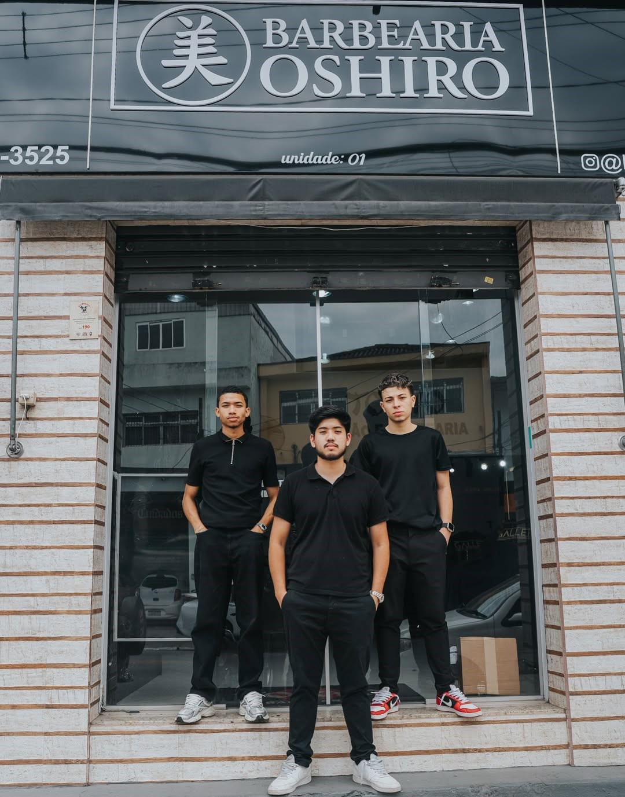
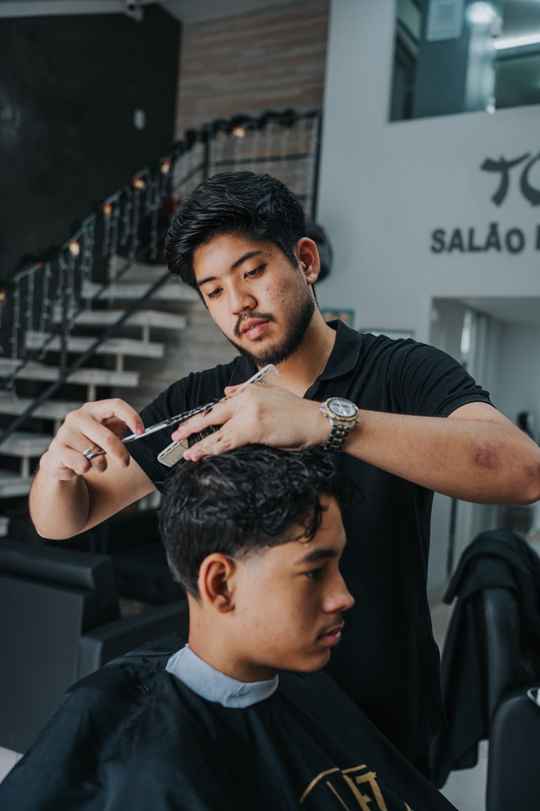

Conheca a Barbearia Oshiro





Conhecido pelos clientes como DVD, David Luis descobriu sua paixão pela barbearia ainda jovem, inspirado por um amigo que costumava cortar seu cabelo. Foi nesse momento que percebeu que queria seguir carreira na profissão.
Antes de ingressar na área, realizou cursos de gestão empresarial, que contribuíram para seu desenvolvimento profissional e pessoal. Mesmo assim, seu objetivo sempre foi atuar como barbeiro, pois admirava o ambiente das barbearias e a satisfação dos clientes ao saírem com um novo visual.
Determinado a transformar esse sonho em realidade, iniciou um curso profissionalizante de barbearia, onde adquiriu conhecimentos técnicos e confirmou que havia encontrado sua verdadeira vocação. Após quatro meses de formação, decidiu continuar praticando diariamente, realizando atendimentos na casa de seus pais e compartilhando cada evolução em seu Instagram.
Seu trabalho chamou a atenção do proprietário de uma barbearia próxima à sua residência, que o convidou para integrar a equipe. Essa oportunidade marcou o início de uma trajetória de crescimento, aprendizado e reconhecimento na profissão.
Hoje, David é sócio da Barbearia Oshiro e dedica-se diariamente a oferecer um atendimento de excelência, sempre buscando proporcionar confiança, estilo e uma ótima experiência para cada cliente que passa pela sua cadeira.
Conhecido pelos clientes como DG, Diogo Oshiro sempre teve espírito empreendedor. Ainda muito jovem, dava seus primeiros passos nos negócios vendendo pipas na garagem da avó, demonstrando desde cedo sua vontade de crescer e construir seu próprio caminho.
Foi por incentivo do pai que conheceu o universo da barbearia. A ideia de aprender a cortar cabelo despertou seu interesse imediatamente, e ele iniciou um curso de formação, aprendendo técnicas de corte masculino e feminino.
Após concluir o curso, decidiu empreender por conta própria. Começou atendendo amigos em casa, cobrando R$ 10 por corte, e compartilhava cada resultado em seu Instagram. Essa dedicação e consistência fizeram seu trabalho ganhar visibilidade.
Cerca de um ano depois, recebeu o convite para integrar a equipe da Barbearia Oshiro. Aceitou o desafio e rapidamente se identificou com o ambiente, com a equipe e, principalmente, com os clientes.
Hoje, além de oferecer cortes com qualidade e atenção aos detalhes, DG é conhecido por criar um atendimento descontraído, produzindo vídeos e momentos especiais com seus clientes. Atuando como líder da equipe, ele segue evoluindo profissionalmente e fazendo o que mais gosta: transformar a autoestima das pessoas através do seu trabalho.
